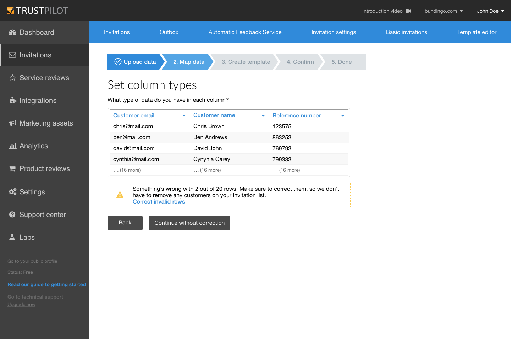

Trustpilot - Case Study
4 min read
Trustpilot is a review website for online businesses. Throughout my internship, I was part of the product team that was responsible for invitations.
About review invitations
Invitations are different methods that allow companies to collect verified reviews, which are necessary to be qualified for Google Seller Rating (the little stars that show up under the website address on Google Search)
The part of the invitations I was working on was the manual invitation methods. These are important for newly registered businesses because they provide an easy way to start collecting reviews by inviting past customers.
However, about 20% of the users did not finish the invitation wizard and dropped out, thus not sending out review invitation emails. My job was to identify the pain points in the wizard and fix them to improve the conversion rate.
The importance of reviews
Trustpilot has a freemium business model, thus one of their main goals is to convince their customers to move up from the free tier and pay a subscription for additional features. But for this, the Trustpilot first have to prove their worth, by making companies see how positive reviews could help their business.
What made the problem challenging was the scope of the work. I only had my internship to work on this problem, and the invitation wizard/flow is quite big. This meant, that I had to adjust my process because I could not use long duration experiments, like A/B tests.
How I worked
In this project, I was not able to start by conducting a research due to time constraints and the limitations of access to use the analytics tools of the company. Instead, I've been provided with observations and insights from previous user interviews about the areas that could be improved. Thanks to that, I was able to better understand the user behavior, which led me to began exploring possible solutions.
I've made rough paper sketches of possible solutions, which I then used for creating an interactive prototype. At Trustpilot, the usability test and user interviews are conducted using (high fidelity) prototypes made in Sketch. Therefore, I've learned to use Sketch with Invision and created a pseudo-high fidelity clickable prototype. I'm calling it pseudo-high fidelity, because although it resembled a high-fidelity prototype with its interactivity and realistic look (as I've modified previous designs from Trustpilot's design library), I did not strive to make the design pixel-perfect.
Working on iteration was what I've spent most of my time doing on my internship. I ran a screener survey with Qualaroo, to find participants for remote usability tests, that consisted a Think Aloud test and a quick user interview. These sessions served two main purposes. Firstly, validating the prototype. Secondly, using it for product discovery, which is validating the problem I was trying to solve, as to compensate for the gaps in the research and analysis in the beginning. In an iteration, I've refined the prototype based on the previous usability test and repeated the test this new version. I also involved internal experts, such as UX designers, a Copywriter, and a Customer Success Manager into the project to complement the feedback of the users.
One of the challenges I've encountered in this project was, that I had to create a design, that could work both in the current setting and in future ones as well. In one case, as I was talking to the Product Manager it turned out, that because of some upcoming changes in a feature that would take place in the next quarters, some design variants had to be discarded, since they wouldn't be viable in the future.
The end result
Despite the fact, that due to time constraints my new design had not been tested with enough users to be able to measure how it actually affects the conversion rate, the feedbacks were really positive. Multiple users said that it is more straightforward and easier to understand than the current version of the invitation wizard, and some even asked when they can expect to see it in the product. Furthermore, the Product Manager was really fond of the data mapping step I've designed and he is considering to implement it into production.
Acknowledgements
I would like to express my appreciation to my mentor Jes for guiding me through my internship, to Steen for answering my questions about the product, to Oline for helping with the copy, and to the Design team at Trustpilot for assisting and advising me on certain problems.
Extra
At last, I'd like to mention one thing I have learned on my internship. On my first day, my mentor at Trustpilot gave me a book by Jeff Patton titled User Story Mapping to read it because it's philosophy was fully embraced by the company. At the beginning of the book, the author says the following: “There’s always more to build than we have time or resources to build — always."1 "...if you get the game right, you will realize that your job is not to build more - it’s to build less. At the end of the day, your job is to minimize output and maximize outcome and impact”1 I've seen it manifest in real life, as I was working on this project because my background in web development allowed me to identify the design changes would require a lot of resources to build but would result in a barely noticeable impact. Some might say, that this is not the domain of UX, and therefore I should only focus on the users, and let the Product Managers worry about the building cost. However, this insight allowed me to be more productive with my time by prioritizing what problems I should focus on.
1 Patton, J. and Economy, P. (2014) User Story Mapping: Discover the Whole Story, Build the Right ProductO'Reilly Media, Inc., xli